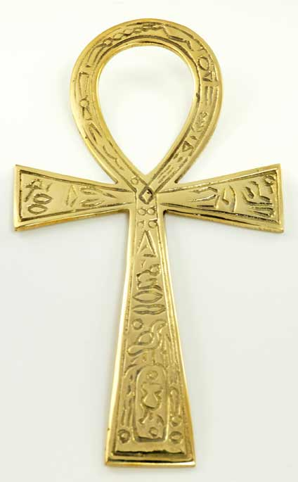
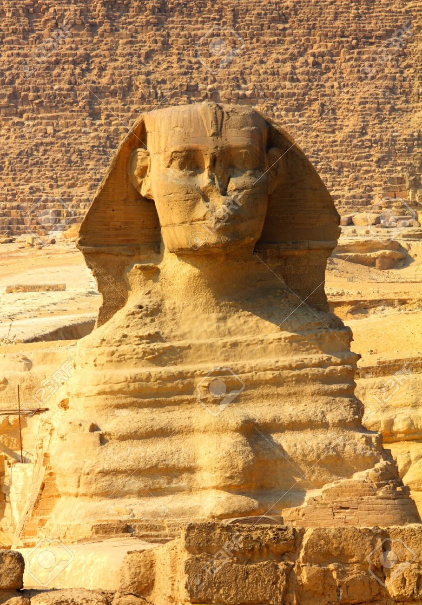
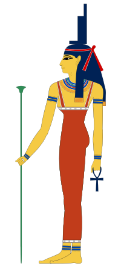

Popis nekih važnijih bogova
- Nun - ocean prema heliopoliskom mitu, bog prema hermopoliskom mitu.
- Ra - bog Sunca, ima glavu orla, u Starom i Srednjem kraljevstvu kralj bogova.
- Amon-Ra - spoj Ra i Amona, boga Tebe, staroga grada.
- Amaunet - prva Amonova žena, nastala iz Nuna.
- Mut - božica majèinstva, druga Amonova žena.
- Khonsu - bog Mjeseca, zajedno sa svojim roditeljima Amonom i Mut zaštitnik Tebe.
- Khepri - bog jutarnjeg Sunca, skarabej.
- Atum - bog zalazeæeg Sunca, ovnova glava, spoj s Raom (Ra-Atum).
- Šu - bog zraka.
- Tefnut - božica vode, kiše i vlage, lavlja glava.
- Hathor - božica-krava, "oko boga Ra", zaštitnica mrtvih.
- Geb - bog Zemlje i vegetacije.
- Nut - božica neba, majka zvijezda i bogova.
- Oziris - potomak Nut i Geba, njihov najstariji sin, bog plodnosti.
- Izida - božica ljubavi, braka i života, Ozirisova žena.
- Set - bog glave vuka, vladar pustinja.
- Neftis - božica noæi i grobnica, Setova žena, Ozirisova ljubavnica.
- Anubis - bog-šakal, prvotno kralj podzemlja, nezakoniti Ozirisov sin.
- Horus - bog-sokol, postoje dva Horusa - sokol i bog ljudskog tijela i sokolove glave.
- Èetiri Horusova sina - èetiri boga, štite kanope i mumije, pomažu im moæne božice.
- Thoth - bog-ibis, zaštitnik pisara, bog Mjeseca.
- Sekhmet - božica-lavica, ratnica, okrutna i osvetoljubiva.
- Seshat - božica pisanja, mudrosti i znanosti, zapisnièarka bogova.
- Neit - božica rata, drevna sjverna božica, vlada lukom i strijelom, "Majka Bogova".
- Tawaret - božica-vodenkonj, zaštitnica djece i trudnica.
- Hapy - bog Nila i vode, daje plodnost Zemlji, važniji seljacima od samog Ra.
- Ma'at - božica istine, pravde i svemirskog reda, smatrana faraonovom sestrom, nadgledava rad cijelog svemira.
- Sobek - bog-krokodil, bog plodnosti, skriven u moèvari.
- Selkis - božica škorpiona i lijeèenja, zaštitnica mumija i faraona.
- Bes - bog veselja i plesa, èudni patuljak, pratitelj Tawaret.
- Ptah - bog umjetnosti, prema memfiskoj mitologiji, stvoritelj neba i Zemlje, Atumov otac.
- Hnum - bog-ovan, lonèar, stvorio je ljude na svom lonèarskom kolu.
- Min - bog plodnosti muškaraca i erekcije, "Bik Svoje Majke".
- Huh - bog nebeske vjeènosti i beskonaènosti, jedan od stvoritelja svijeta, uz Nuna i Amona.
- Kek - bog tame, stvoritelj svemira.
- Apop - kobra, dijete Neit, neprijateljica Ra.
- Ammut - èudovište od više dijelova, proždire zle ljude.
- Dvije dame - sestre blizanke, Wadjet i Nekhbenet.
- Sfinga - èudovište ljudske glave i lavljeg tijela, premda može imati glavu ovna, poznata je Velika sfinga u Gizi.
- Feniks - sveta èarobna dvospolna ptica, spominje se i u Kini.
- Heket - božica-žaba, znak života i plodnosti.
- Meretseger - božica-kobra, zaštitnica Doline kraljeva u Tebi.
Simbol ankh
Sfinga

Izida
Petra Jakopoviæ © 2016.